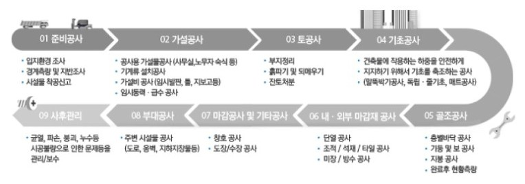
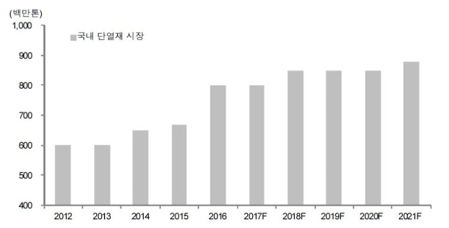
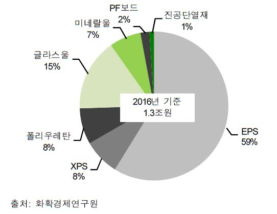
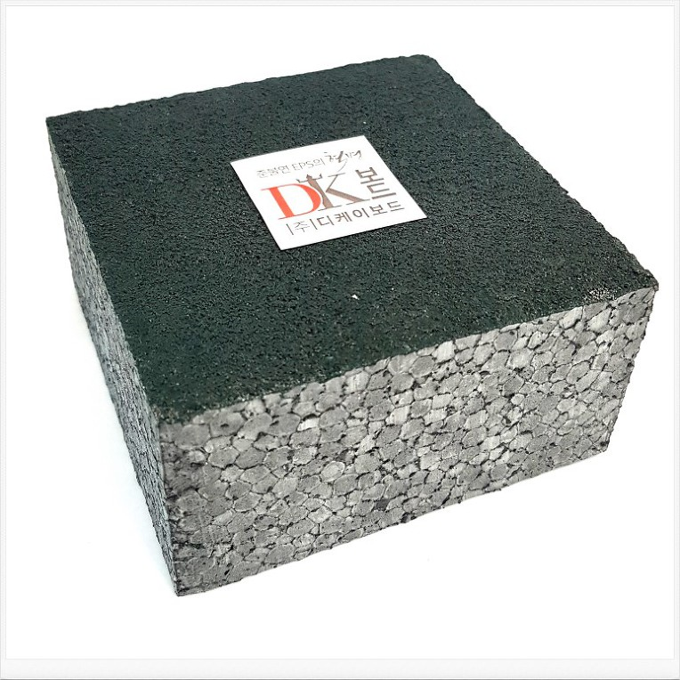

열의 이동을 억제하여 에너지 손실을 최소화 하는 단열재
열은 전도, 대류, 복사 등의 현상으로 높은 곳에서 낮은 곳으로 이동하는 성질을 지닙니다.
단열이란 이러한 열의 이동을 방지하는 것으로, 겨울에는 실내의 따뜻한 공기의 손실을 방지하고, 여름에는 바깥의 뜨거운 공기를 차단하여 실내의 시원한 공기를 유지합니다.
단열재는 열의 이동을 최대한 억제할 목적으로 사용하는 각종 재료를 통틀어 일컫는데요.
단열공사는 내외부 마감재 공사에 사용되며, 착공 후 대개 8~10개월 이후 층별 골조공사와 함께 진행됩니다.

건축공정순서 (신영증권)
석유화학 계통 재료의 사용여부에 따라 유기질, 무기질로 구분
단열재는 시공 범위, 재료, 온도 등에 의해 다양하게 구분됩니다.
재료에 의한 구분 법이 일반적이며, 주요 재료성분에 의해 유기질, 무기질 단열재로 나뉘는데요.
단열재의 단열성은 두께가 일정할 경우 열전도율에 의해 좌우되며, 열전도율이 낮을수록 우수한 단열성을 갖습니다. 대체로 유기 단열재의 열전도율이 무기섬유질 보다 낮으며, 시판되고 있는 단열재 가운데 열전도율이 가장 낮은 재료는 경질우레탄폼(PIR)입니다. 이는 열전도율이 매우 낮은 프레온 가스를 발포제로 사용하기 때문이죠. (※페놀폼의 열전도율도 PIR과 비슷한 0.020수준)
● 무기질 단열재별 용도 및 특징
항목 | Glass Wool 그라스울 | Mineral Woo 미네랄울 | Perlite 펄라이트 |
용도 | • 건물별 보온 단열방음재 • 소음설비 및 방음구 흡음 • 차량∙가전제품의 냉동단열 | • 주택용 단열 • 산엽용 Plant • 설비닥트 보온용 • 산업용설비 배관용 | • 건축 단열재 • 내화용 주조 • 단열재 • 제철공장 고온 단열재 |
특징 | • 단열효과 우수 • 흡음성능 우수 • 탄력성 • 수분흡수율이 높음(단점) | • 사용온도 넓음 • 단열효율 우수 • 화재시 유해가스 없음 | • 고온에서 단열효과 우수 • 흡음효과 좋음 • 부식성이 있음 |
● 유기질 단열재별 용도 및 특징
항목 | EPS 발포 폴리스티렌 | PU 발포 폴리우레탄 | XPS 압출발포 폴리스티렌 |
용도 | • 건축용 단열 • 냉동설비의 보냉 • 완충포장재 • 아이스박스 | • 건축용 단열 • 각종 보∙냉기 단열 • 차량∙선박∙공업용탱크∙각종 설비의 보온∙보냉 | • 주택 단열 • 냉동창고 보냉용 |
특징 | • 단열성 우수 • 가공성 및 시공성 용이 • 방수성 우수 • 내열온도 낮음 | • 단열성 우수 • 흡음성 우수 • 시공성 용이 • 사용 경과에 따라 부피줌 | • 경량 및 강도 우수 • 단열성 우수 • 흡수성∙흡음성 우수 • 장시간 성능변화 없음 |
단열재 수요 2022년까지 꾸준히 증가 예상


제품별 시장비중
※ 위 단열재 시장규모는 건축용뿐만 아니라 단열재 전체 시장을 산정한 것입니다

준불연 EPS 단열재 DK보드 (열전도율 W/mK 0.031~0.032)
준불연 가등급 EPS 단열재 DK보드
건축용 / 드라이비트용 / 판넬용
문의 1855-2240